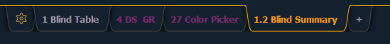

Any frame can have multiple tabs open. Tabs are broken down into two categories: Control and Display. Control tabs are the virtual control options, such as the color picker and the virtual keyboard. Display tabs are the various displays available on the console, such as the playback status display and the park display.
You can open or close tabs using the Display Icons, Control Icons, or typing the [Tab] & the tab number. Pressing [Shift] & [Tab] once will clear all tabs on the selected monitor but tabs in locked frames will remain. Pressing [Shift] & [Tab] twice will clear all tabs on all monitors but tabs in locked frames will remain. Pressing [Shift] & [Tab] a third time will clear all tabs on all monitors including those in locked frames.
White text in the tab indicates a Display Tab, and magenta text indicates a Control Tab.
All Display and Control Tabs have fixed Tab Numbers under which they open (for example, “Live” opens under Tab 1, “Patch” under Tab 12, and “Color Picker” under Tab 27).
These numbers are identified on the Home Screen in each icon. For multiple instances of the same display, the tab number will be followed with a decimal number. Additional tabs will start their numbering with n.2. When you press [Tab], active focus will move numerically through all open tabs on active workspaces.

Note: Single clicking on a Controls Tab will bring it to the front of the frame but will not move focus to that tab unless the tab’s frame already has focus. Double clicking on a Controls Tab will bring it to the front and grab focus. Single clicking on a Display Tab will bring it to the front and grab focus.